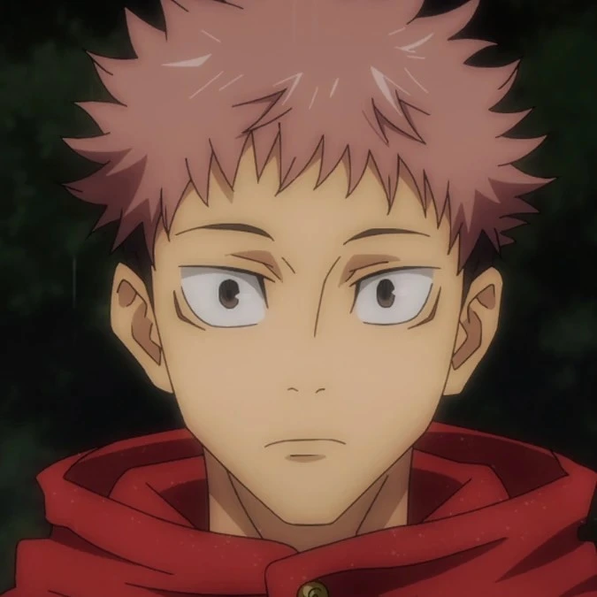

Yuji Itadori (虎杖 悠仁, Itadori Yūji)
Yuji Itadori est le principal protagoniste de Jujutsu Kaisen.
Il était initialement un élève de seconde du lycée Sugisawa 3.
Toutefois, après avoir ingurgité l'un des Doigts de Ryomen Sukuna alors qu'il était aux portes de la mort, Yuji est devenu le réceptacle du Roi des Fléaux.
Il est alors mis à mort par les exorcistes mais obtient un sursis qu'à une seule condition : trouver et ingurgiter tous les Doigts de Sukuna et une fois qu'il aura accompli sa mission, Yuji sera exécuté.
De ce fait, Yuji intègre l'école d'exorcisme de Tokyo sous la tutelle de Satoru Gojo et devient le camarade de classe de Megumi Fushiguro et Nobara Kugisaki.